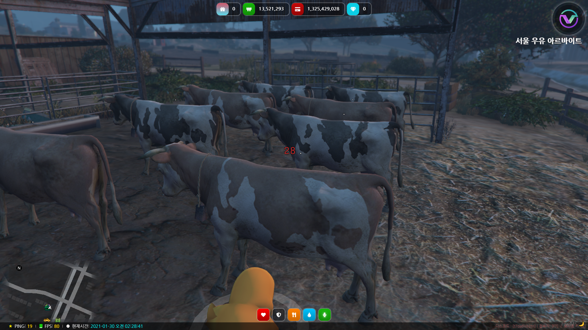
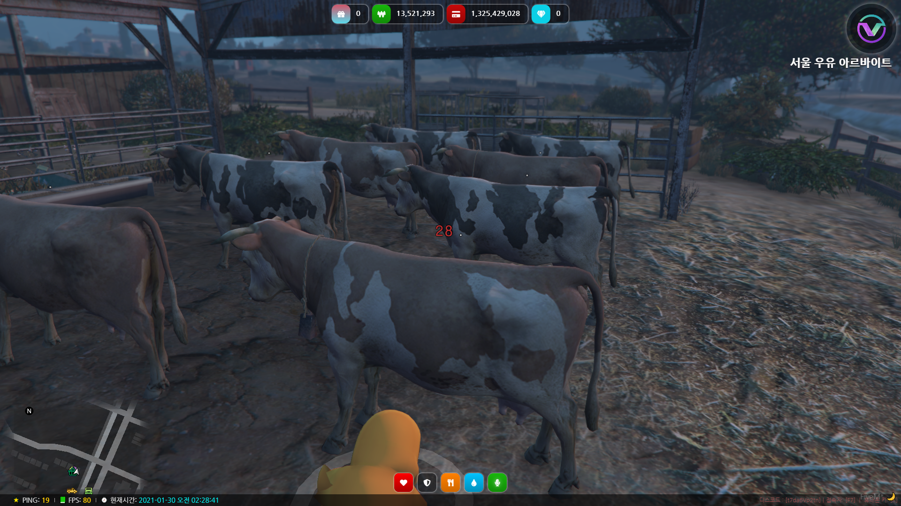

건설업체 일용직


1.건설업체일용직을하시는 곳은 위지도의 흰색가방입니다.
2.이곳에오시면 비콘이있습니다. 이곳에는 빛나는 드릴이 있습니다.드릴은 하실만큼 구매하시니
다.
3.드릴을 구매 하셨으면 옆에 e가있을것입니다. 앞에가셔서 e키를 눌르시면 드릴을사용하게되면서
삼성시멘트를 얻습니다.쿨타임은60초입니다.
4. 인벤토리에 삼성시멘트가 들어옵니다. 시멘트를 눌러 판매하기를 하시면 돈이들어옵니다.
고고학자


1.상점에가셔서 유물의 먼지를 털기 위한 붓을 구매해줍니다.붓은사용하실만큼구매합니다.
2.지도에있는 뼈모양가시면 가운데에 가서 e를 눌르면 유물이 나옵니다. 쿨타임은 60초입니다.
3.캐고 인벤토리에 가시면 [고고학자]유물이있습니다. 유물을눌러주시고 유물교환을해줍니다.
4.유물을교환하셨으면 배달하는곳에가셔서 배달을해줍니다.
물고기 도매상


1.물고기를잡으러 지도에위치한 곳으로갑니다.물고기는 베스,메기 있습니다.
2.지도에가시면배가있는데 올라와줍니다. 올라와 오시면 위에 낙시터 비콘이있는데 가까이가셔서
메기와베스를 눌러 얻어줍니다.
3.둘다 얻으셨으면 배달하는곳에가셔서 배달하시면됩니다.
배달부
1.배달부는 상점에서 생수와타코벨을 구매해줍니다.음식은배달하실만큼사줍니다.
2.음식을 구매하시고 배달하는곳에가셔서 배달을하시면됩니다.
북한산 목수


1. 지도위쪽에 북부경찰서 옆 보라색가방에 가셔서 주위에있는 나무에 가까이 가셔서 e를 눌러 줍니
다.
나무쿨타임은 60초입니다 주변에나무에서도 가능합니다.
2.지도에가시면배가있는데 올라와줍니다. 올라와 오시면 위에 낙시터 비콘이있는데 가까이가셔서
메기와베스를 눌러 얻어줍니다.
서울우유알바

 


1.서울우유알바는 지도에있는 곳으로갑니다.북부쪽입니다.
2.오시면 상점이 있습니다. 상점에는 빈병있습니다.상점옆에는 ATM이있어서 빈병사실때 돈을 뽑아
쓰셔두 좋습니다.
3.우유를만들만큼빈병을사시고 앞에있는 젖소앞에와서 e를눌러 우유를 만드시면 됩니다.
4.다 만드셨으면 인벤토리에 서울 우유가있습니다. 우유는 마시거나 사람들한테 팔아 돈을 법니다.
숲속사냥꾼


1.숲속사냥꾼은 지도에 위치한 곳으로 가줍니다. 지도에 표시가없으므로 사진을보고 잘찾으시면됩
니다.북부쪽에 위치합니다.
2.오셨으면 앞에 두개의 비콘이있는데 Start Hunting를 e키로 눌러 시작합니다. 총은 자동으로 들
어옵니다.절대로 총으로 사람을 쏘시고하시면안됩니다.
하시면 서버에서 불이익을받으실수있습니다.
3.지도에 빨간색 십자가 있습니다.그쪽에 가시면 사슴이있습니다. 받으신 총으로 사슴을 맞춥니다.
4.사슴을 맞추셨으면 지도에 초록색으로 십자가색이 바뀝니다.죽은 사슴앞에 가시면 e키를 눌러 스
테이크와 가죽을 얻습니다.
아오지탄광광부


1.아오지탄광 하시는곳은 위지도에 위치한곳입니다.
2.가운데로 오시면 주변에 돌이 있습니다. 그돌에 가시면 e가 뜨는데 e키를눌르면 가공되지 않은 광 물이 나옵니다.
한바위에쿨타임은60초입니다.
3.인벤토리에 가시면 가공되지 않은 광물이 있습니다. 그것을 눌러 가공하기를 해줍니다.
해주시면 랜덤으로 석탄등등이나옵니다.
4.가공을다하셨으면 인벤토리에 구리,석탄 등등이있는데 거기서 구리를 눌러 판매하기를 하시면 판
매가 되어 돈이 들어옵니다.
쿠팡배달직원
1.쿠팡배달을 받기위해 지도에있는 P모양에가줍니다.P회색입니다.
2.도착하시면 노란색으로 시작하시는 곳이 있습니다.시작하는것은 G입니다. 하시면 위사진처럼 뒤쪽에 트럭이나옵니다.
그러면서 동시 택배상자도나옵니다.
상자는 운전석쪽에 가져가셔서 e키를 눌러 상자를 넣습니다.
3.차량에 타시면 배달지가 자동으로 찍혀있습니다. 배달지에 오셨다면 차량에서 내리시고 차량의운전석으로가서 e키를 누르시면 택배사장가 다시나옵니다.
4.가지고 오셨으면 배달지비콘에가셔서 G키를 눌르면 배달이됩니다.
5.배달을하시고 트럭을 본사까지 반납하는것으로 끝이나서 차량을 본사까지 운전합니다.
6.차량을 가지고 오셨으면 e키를눌러 택배차량을 반납합니다. 본사는 처음 택배상자를 받으셨던곳
입니다.
포르노밀매업자
1.서울우유알바는 지도에있는 곳으로갑니다.북부쪽입니다.
2.오시면 상점이 있습니다. 상점에는 빈병있습니다.상점옆에는 ATM이있어서 빈병사실때 돈을 뽑아
쓰셔두 좋습니다.
3.우유를만들만큼빈병을사시고 앞에있는 젖소앞에와서 e를눌러 우유를 만드시면 됩니다.
4.다 만드셨으면 인벤토리에 서울 우유가있습니다. 우유는 마시거나 사람들한테 팔아 돈을 법니다.